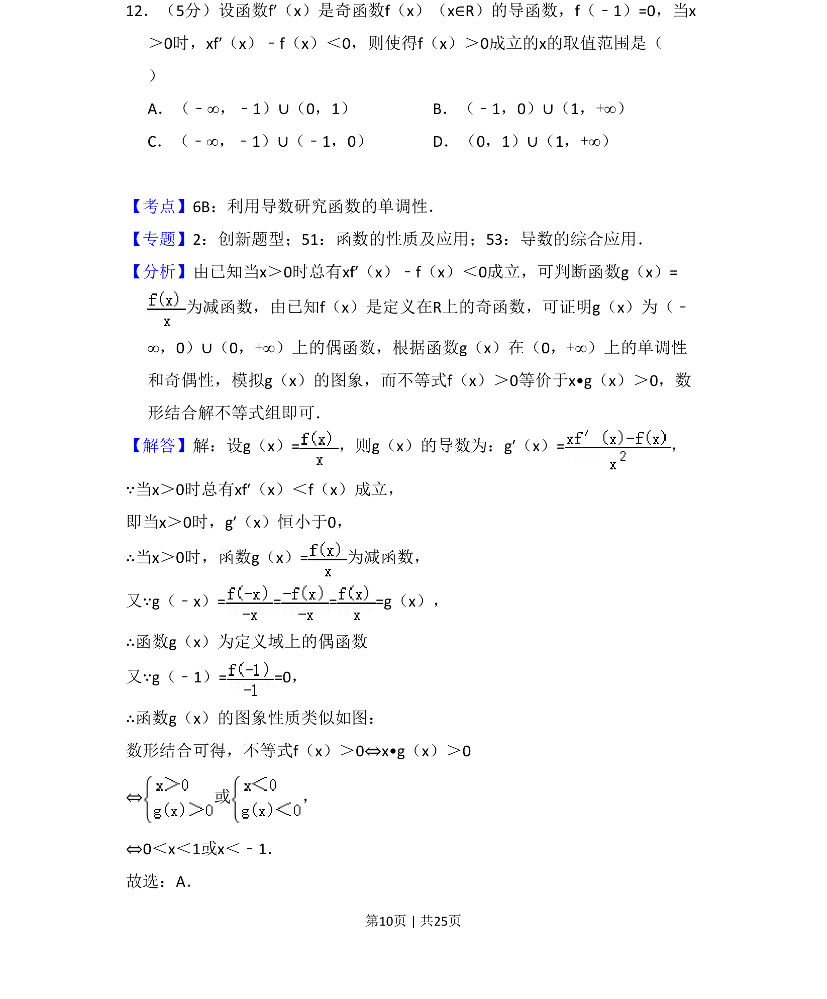
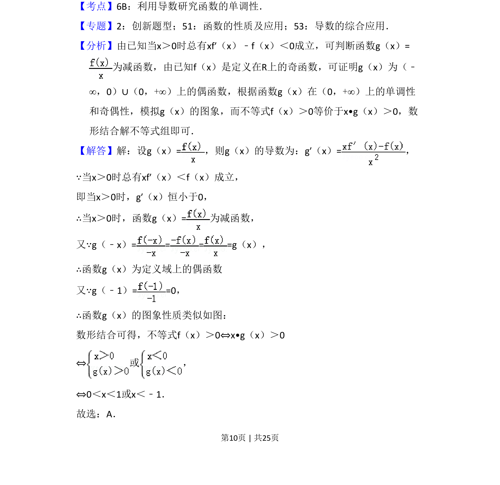
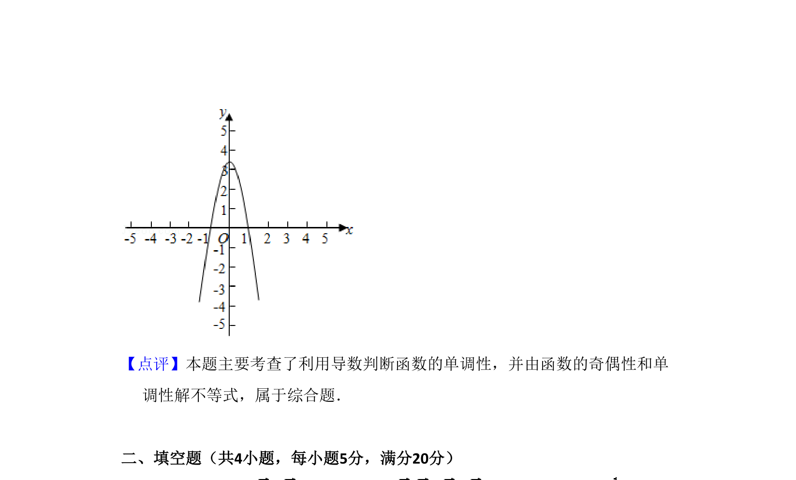

考点：利用导数研究函数的单调性 函数奇偶性 数形结合 构造函数

本题考查利用导数研究抽象函数单调性、奇偶性，结合构造函数与不等式解法。


📄 原 PDF 第 10 页：
素材/真题/吉林/2008-2024·（吉林）数学高考真题/2015年高考数学试卷（理）（新课标Ⅱ）（解析卷）.pdf
12．（5分）设函数f′（x）是奇函数f（x）（x∈R）的导函数，f（﹣1）=0，当x ＞0时，xf′（x）﹣f（x）＜0，则使得f（x）＞0成立的x的取值范围是（ ） A．（﹣∞，﹣1）∪（0，1）B．（﹣1，0）∪（1，+∞） C．（﹣∞，﹣1）∪（﹣1，0）D．（0，1）∪（1，+∞）
【考点】6B：利用导数研究函数的单调性．菁优网版权所有 【专题】2：创新题型；51：函数的性质及应用；53：导数的综合应用． 【分析】由已知当x＞0时总有xf′（x）﹣f（x）＜0成立，可判断函数g（x）= 为减函数，由已知f（x）是定义在R上的奇函数，可证明g（x）为（﹣ ∞，0）∪（0，+∞）上的偶函数，根据函数g（x）在（0，+∞）上的单调性 和奇偶性，模拟g（x）的图象，而不等式f（x）＞0等价于x•g（x）＞0，数 形结合解不等式组即可． 【解答】解：设g（x）=，则g（x）的导数为：g′（x）=， ∵当x＞0时总有xf′（x）＜f（x）成立， 即当x＞0时，g′（x）恒小于0， ∴当x＞0时，函数g（x）=为减函数， 又∵g（﹣x）= = = =g（x）， ∴函数g（x）为定义域上的偶函数 又∵g（﹣1）= =0， ∴函数g（x）的图象性质类似如图： 数形结合可得，不等式f（x）＞0⇔x•g（x）＞0 ⇔或 ， ⇔0＜x＜1或x＜﹣1． 故选：A．